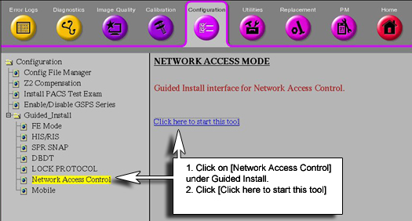
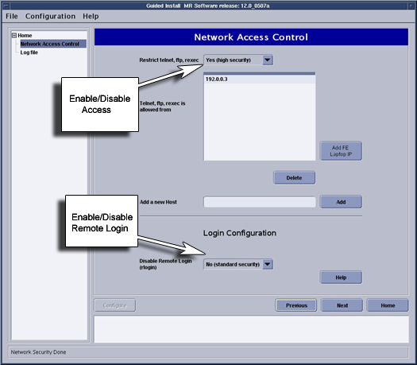
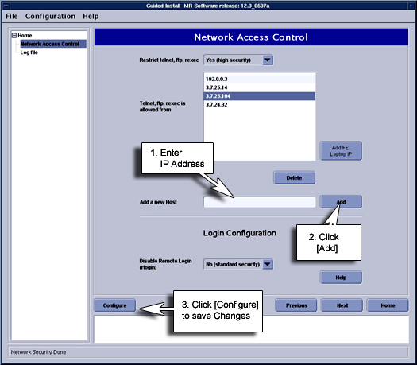
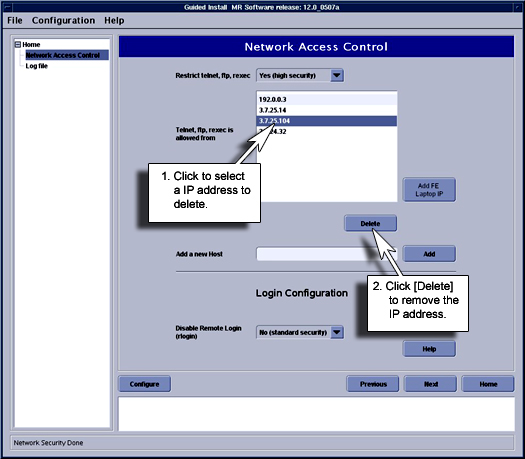
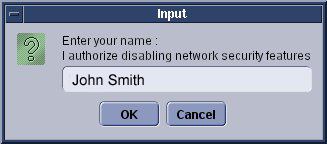

Operating Documentation
Direction 5133315-3, Rev# 14
Signa EXCITE HD 1.5T Service Methods
Module Version 1.0, Version Date 4/27/07
Operating Documentation |
Network Access Control is used to prevent network access from other systems on the same backbone. It is now possible to enable a certain set of systems by manually entering the system IP addresses. The entire Network Access Control process can be by-passed by selecting No (standard security). For Excite HD, TCP Wrapper or Network Security is defaulted to No (standard security) option. To enable Network Access Control select [Yes] (high security) using the procedure below.
| NOTE: | You can also enable or disable rlogin feature. The rlogin is different from Network Access Control as the Network Access Control is a GSP product that restricts access from only telnet, ftp and rexec. rlogin is not a GSP feature, and must be controlled separately. For rlogin, even if you put the ip address in the list, rlogin will continue to be blocked. However, telnet, rexec, ftp will work if you add a system to the list. |
1. To access Network Access Control, go to Common Service Desktop, select Configuration section, See Illustration 1.
Illustration 1: Starting Network Access Control Screen

2. When prompted, the password will be: operator<Enter>.
3. The Network Access Screen will open. See Illustration 2.
Illustration 2: Network Access Screen

4. To enable Network Security, go to [Restrict telnet, ftp, rexec] and select Yes, high security option. Selecting No, Standard security option allows network access to any GE system on the site backbone via telnet, ftp or rexec.
5. If Yes, High security is chosen, the system will not be able to communicate via network to other systems. If access to “specific” systems is required, they can be added, put cursor in the [Add a new Host] section, enter the IP address of the host in which network communication is required, then select [Add]. The system ID will appear in the section labeled ”Telnet, ftp, rexec is allowed from”. To make the change take effect, click [Configure]. See Illustration 3.
Illustration 3: Adding Sites

6. To delete an IP address that has been entered, highlight the specific address, then click the [delete] Button. See Illustration 4.
Illustration 4: Removing Site Access

7. If you want to disable Restricted Access, select Restricted telnet, ftp, rexec. Then select No, (standard security) option. You will then be prompted to enter the name.of the customer allowing authorization to lower security. See Illustration 5. This will track who allowed access.
Illustration 5: Security Change Authorization

8. All activity in the Network Access Control is logged in the system logs.